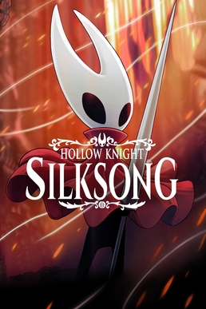

Current Game Fixation: Hollow Knight: Silksong
9/28/2025 - Abigail Gill
Hollow Knight: Silksong is a game I have been waiting for since I graduated middle school. The game is a sequel to Team Cherry's critically acclaimed title Hollow Knight, and was announced all the way back in February of 2019. Having loved the first game, I was extremely excited to delve back into the world that Team Cherry created. At the time, I had no idea that I'd be a junior in university by the time of the game's release. But now, as of September 4th, the game is out, and I've been loving it. Many others have been loving it, too. So many, in fact, that upon the games release, the online storefronts for Steam, Xbox, PlayStation, and Nintendo, all simultaneously crashed due to the traffic from users trying to purchase the game. Luckily for me, I beat the rush and managed to snag the game on Steam before the stores went offline. Since launch, I've been putting any spare free time I have into playing (which, right now, isn't much). I've been surprised again and again by just how polished the game is. After so many years, I was curious if the game would be able to live up to my high expectations. In just the few hours I've put in, the game has exceeded them many times over. I'm looking forward to playing more throughout the next few months! I've included some statistics comparing Hollow Knight and Hollow Knight: Silksong in a table below, so you can better understand how massive the impact of this game has been in such a short time.
| Statistic | Hollow Knight: Silksong | Hollow Knight |
|---|---|---|
| Total Copies Sold | 4.2M (As of mid-september 2025) | 15M (As of august 2025) |
| Peak Concurrent Players | 535,213 (9/4/2025) | 72,916 (8/29/2025) |
| Total Revenue | $50M (in first three days) | ~$100M (as of august 2025) |
